Установка ESHArio
ESHArio ставится с нашего сайта один раз. Дальше код приезжает с нашего сервера за секунды, при каждом открытии вебапа.
Свежая версия с сайта
Архив нужен один раз: дальше код приезжает с нашего сервера за секунды.
Нужен свежий Google Chrome на компьютере (Windows, Mac или Linux). Chrome обновляется сам; проверить версию: chrome://version. Старые и портативные сборки Chrome не поддерживаем.
Видео скоро: за минуту покажем установку по шагам.
ESHArio работает в Safari поверх EA FC Web App. Нужны iPhone с iOS 16 или новее и бесплатное приложение Userscripts.
Проверено на iPhone X с iOS 16.7 и Userscripts 1.8.6.
ESHArio работает в Firefox поверх EA FC Web App. Нужны Firefox и бесплатное дополнение Violentmonkey.
Проверено на Samsung Galaxy A03 (Android 13, Firefox 158).
Установка: восемь шагов
- 1
Уберите прежний ESHArio и выключите другие помощники для FUT
На странице chrome://extensions у ESHArio нажмите «Удалить»: и у копии из магазина, и у прежней копии с сайта. У нового архива свой номер в Chrome, и две копии рядом мешали бы друг другу. Настройки и замки карт решателя в этом Chrome сотрутся. Покупка останется: после установки войдите снова. Другие расширения для веб-приложения FUT выключите переключателем на той же странице. Два помощника на одном экране мешают друг другу: пропадают кнопки и цены.
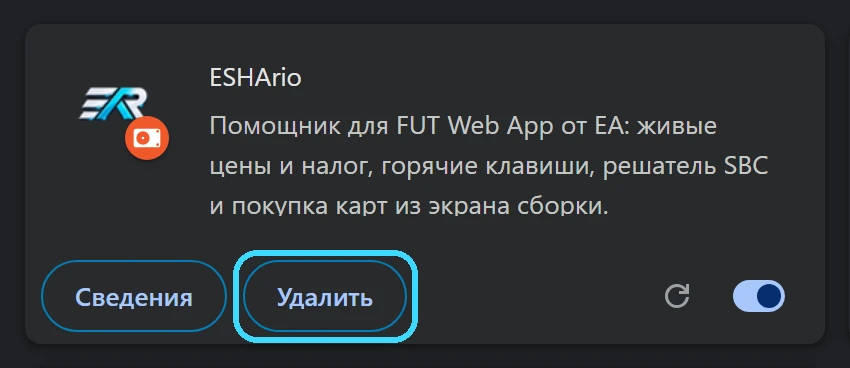
- 2
Скачайте архив
Нажмите кнопку ниже. Архив ляжет в папку «Загрузки». Chrome может пометить свежий архив как редко скачиваемый файл: нажмите «Сохранить».
- 3
Распакуйте архив
Chrome не открывает zip. В окне выбора папки архива не будет вовсе, и это не поломка: Chrome ждёт уже распакованную папку.
Правый клик по архиву, «Извлечь все», «Извлечь». На Mac архив открывается двойным щелчком. Положите папку туда, где она останется, например в «Документы/ESHArio»: Chrome берёт расширение прямо из неё.
- 4
Откройте страницу расширений
Нажмите «Копировать» ниже, вставьте адрес в адресную строку Chrome и нажмите Enter. Откроется страница «Расширения».
chrome://extensions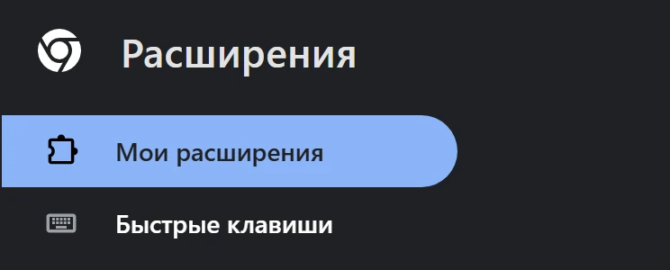
- 5
Включите «Режим разработчика»
Переключатель справа вверху. Он только разрешает ставить расширения из папки и больше ничего не меняет.
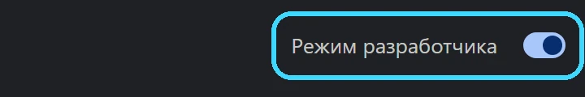
- 6
Нажмите «Загрузить распакованное расширение»
Выберите распакованную папку из третьего шага, ту, где лежит файл manifest.json. ESHArio появится в списке расширений.
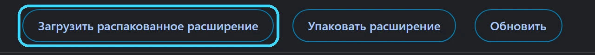
- 7
Закрепите значок ESHArio
Справа от адресной строки нажмите значок пазла, в списке у ESHArio нажмите булавку. Значок встанет на панель Chrome и будет всегда под рукой.
- 8
Войдите в аккаунт
Нажмите значок ESHArio на панели Chrome или «войти» у знака ESHArio в шапке вебапа. Откроется окно входа: почта и пароль из письма о покупке. Бесплатные функции работают и без входа.
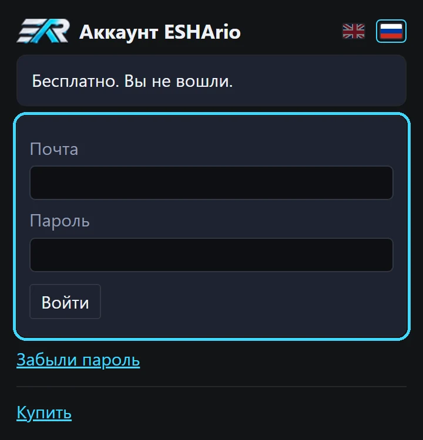
Если при запуске Chrome спросит «Отключить расширения в режиме разработчика?», нажмите «Отмена». Обычно такого окна нет.
Расширение выключилось само после перезапуска Chrome? Так делает Chrome с папкой из «Загрузок» или при выключенном режиме разработчика. Перенесите папку в постоянное место, например в «Документы», включите «Режим разработчика» и нажмите «Загрузить распакованное расширение» ещё раз. Наш код расширение не выключает.
Chrome предлагает удалить ESHArio?
Так Chrome помечает любое расширение не из магазина: «Chrome не может проверить происхождение расширения». Нажмите три точки справа и «Оставить расширение». Пока включён режим разработчика, этот вопрос не появляется.
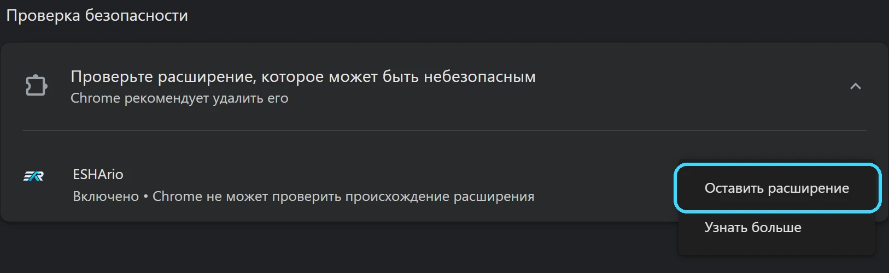
Как обновиться
ESHArio обновляется сам: новая версия приходит с нашего сервера при следующем открытии вебапа, качать ничего не нужно. Новый архив нужен редко, об этом скажет строка «Нужен новый архив» в шапке вебапа. Тогда:
- Скачайте новый архив с этой страницы.
- Распакуйте его в ту же папку и согласитесь заменить файлы.
- На chrome://extensions нажмите «Обновить».
- Обновите вкладку вебапа клавишей F5.
При удалении расширения замки карт решателя стираются, обновляйте поверх, не удаляя.
Настройки и вход при обновлении сохраняются.
Не получилось? Напишите в Telegram или на почту support@eshario.com, поможем.
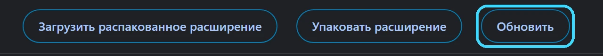
Установка: пять шагов
- 1
Поставьте Userscripts
Найдите в App Store приложение «Userscripts» (автор Justin Wasack) и установите его. Оно бесплатное.
После установки откройте приложение Userscripts один раз с экрана «Домой» и закройте его. Без первого запуска Safari не предложит установить скрипт: в окне Userscripts будет «No matched userscripts».
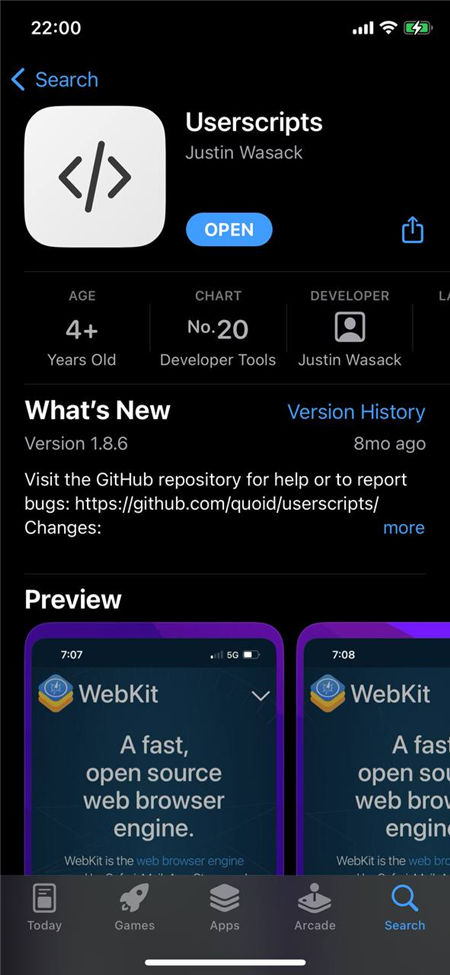
- 2
Включите его в Safari
Менеджер скриптов должен быть один. Если у вас стоит Stay или другой менеджер, выключите его здесь же: два менеджера ведут два разных счёта запросов к EA.
Откройте «Настройки → Safari → Расширения». Включите «Userscripts».
Нажмите «Userscripts» и в строке «Other Websites» выберите «Allow».
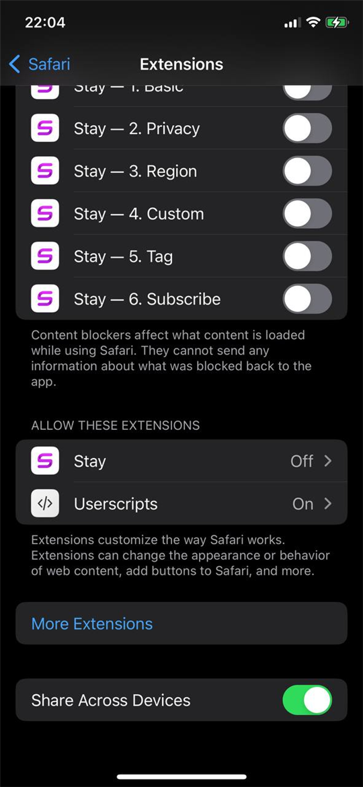
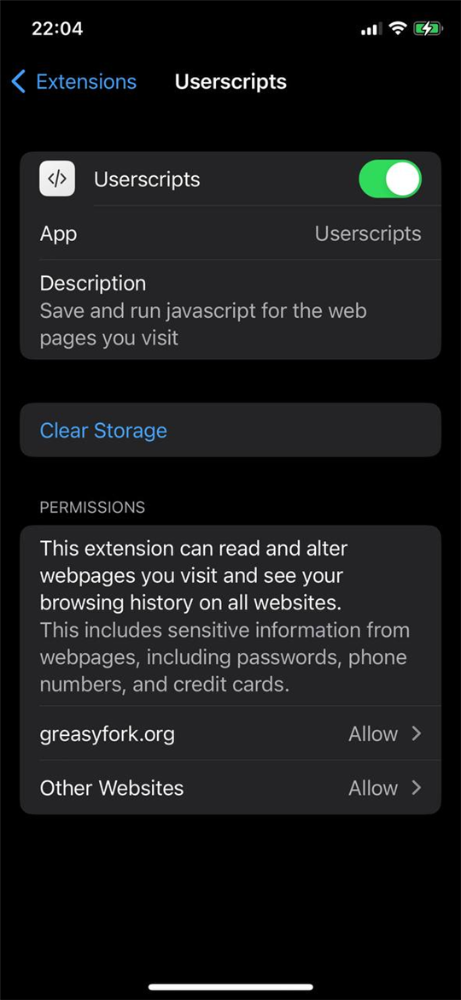
- 3
Установите ESHArio
Откройте эту страницу, eshario.com/ios, в Safari на iPhone и нажмите кнопку ниже. Откроется страница с длинным текстом: это сам скрипт, так и должно быть.
Нажмите «aA» слева в адресной строке и в меню выберите «Userscripts». В окне Userscripts нажмите «Install».
Зелёная строка «Userscript Installed» значит, что всё готово.
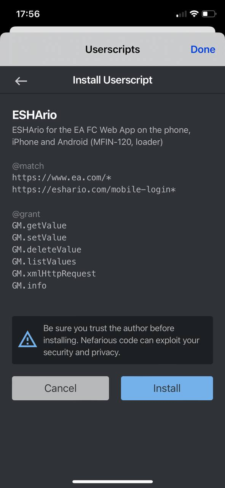
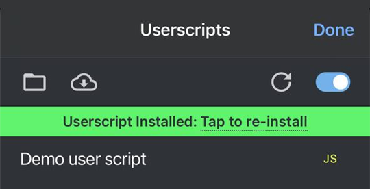
- 4
Откройте вебап
Откройте ea.com/ea-sports-fc/ultimate-team/web-app. В первый раз ESHArio скачивает свой код с нашего сервера и проверяет подпись: сверху будет строка о загрузке. Подождите минуту и обновите страницу. После этого ESHArio появится в шапке вебапа.
Если ESHArio не видно, нажмите «aA» в адресной строке и проверьте, что «Userscripts» есть в меню.
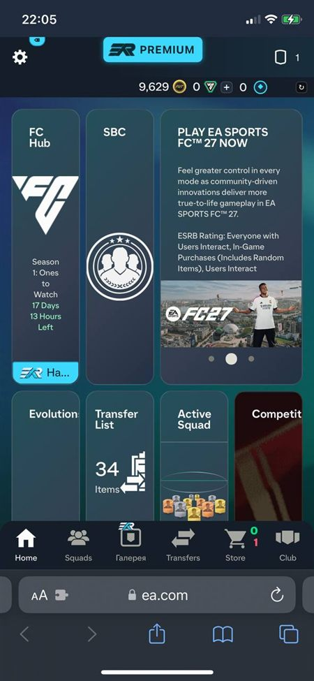
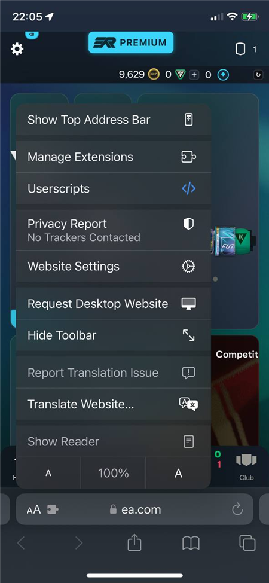
- 5
Войдите в аккаунт ESHArio
Нажмите «войти» в знаке ESHArio в шапке. Откроется страница входа eshario.com/mobile-login. Введите почту и пароль от аккаунта ESHArio и вернитесь в вебап. Купленный доступ включится сам.
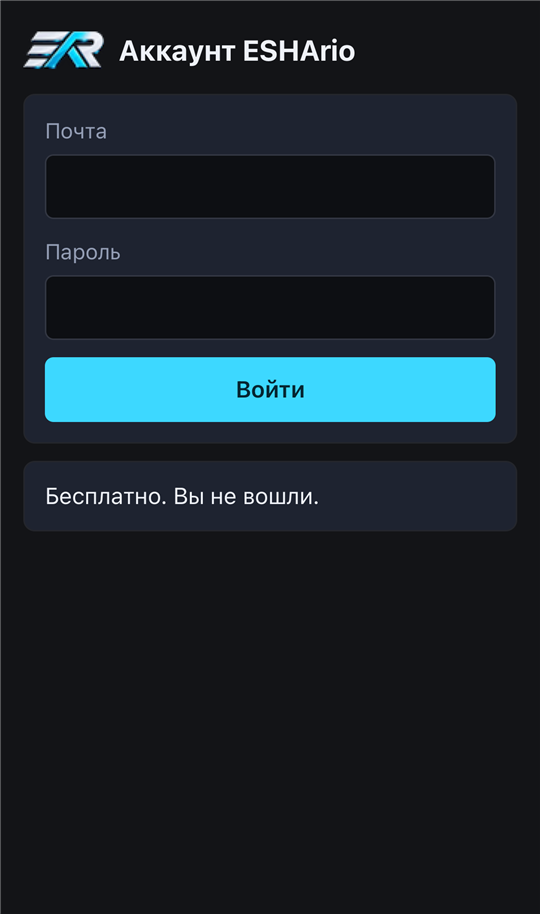
Полезно знать
- ESHArio встаёт через одну или две секунды после вебапа, изредка через десять. Если прошло пятнадцать секунд, а знака ESHArio в шапке нет, обновите страницу.
- Если ESHArio пропал совсем и обновление не помогает, откройте «Настройки → Safari → Расширения → Userscripts» и проверьте, что для «ea.com» и «Other Websites» стоит «Allow». Доступ, выданный «на один день», Safari забирает сам.
- Если доступ стоит, а ESHArio всё равно нет, закройте Safari совсем: проведите вверх от нижнего края экрана, найдите Safari среди открытых приложений и смахните его вверх. Откройте Safari снова и вебап в нём. Иногда расширение в Safari засыпает и не будит скрипт, пока Safari не запустится заново. Обновление страницы этого не лечит.
- Вебап держите в одной вкладке. Во второй вкладке ESHArio покажет строку «занят в другой вкладке» с кнопкой «Перезагрузить». Закроете первую вкладку: вторая заработает сама в течение полуминуты.
- Не держите в Safari много открытых вкладок. Safari выгружает скрытую вкладку из памяти, и вебап при возврате загрузится заново.
- Пока ESHArio ищет карты на рынке, экран не гаснет сам. Первый запуск поиска может показать «Экран удержан, нажмите ещё»: нажмите ещё раз, так Safari разрешает держать экран.
- Если вы заблокируете телефон или уйдёте в другое приложение, поиск встанет на паузу. Вернитесь и нажмите «Продолжить». Со звонком так же: ответили на звонок, поиск на паузе до «Продолжить». Отклонили, поиск идёт дальше.
- Замки карт пока на каждом устройстве свои: карта, запертая на компьютере, на телефоне не заперта. Заприте её и здесь.
- ESHArio работает на одном компьютере и одном телефоне за раз. На втором телефоне ценники пропадут, а знак в шапке покажет «Пауза». А сама EA держит вебап открытым только на одном устройстве: вход в вебап на компьютере выкидывает телефон.
- Обновления ESHArio приходят сами: при открытии вебапа ESHArio проверяет наш сервер и ставит новую версию со следующей загрузки страницы.
Не получилось? Напишите в Telegram или на почту support@eshario.com, поможем.
Установка: пять шагов
- 1
Поставьте Firefox
Найдите в Google Play браузер «Firefox» (Mozilla) и установите его.
- 2
Добавьте Violentmonkey
Менеджер скриптов должен быть один: если в Firefox уже стоит Tampermonkey или другой менеджер с ESHArio, удалите ESHArio из него.
Откройте в Firefox страницу addons.mozilla.org/android/addon/violentmonkey и нажмите «Добавить в Firefox» («Add to Firefox»).
В окне разрешений нажмите «Добавить» («Add»).
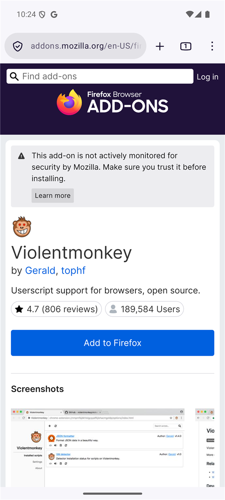
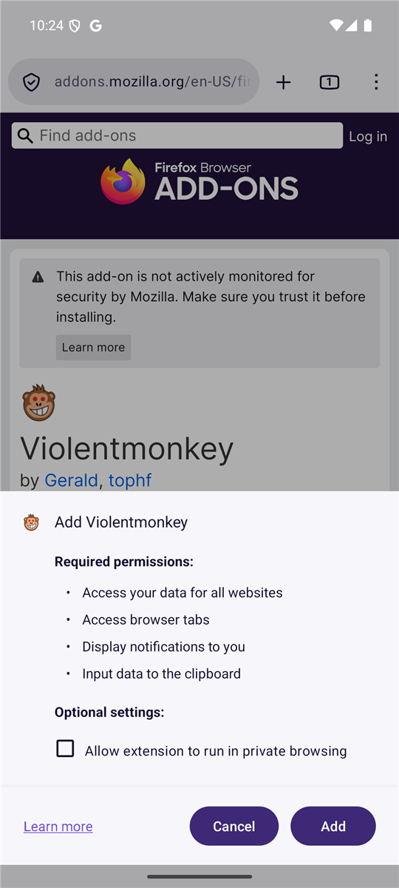
- 3
Установите ESHArio
Откройте эту страницу, eshario.com/android, в Firefox на телефоне и нажмите кнопку ниже. Откроется страница Violentmonkey «Установка скрипта» с именем ESHArio.
Нажмите «Установить» («Install»). Строка «Скрипт установлен» («Script installed») значит, что всё готово.
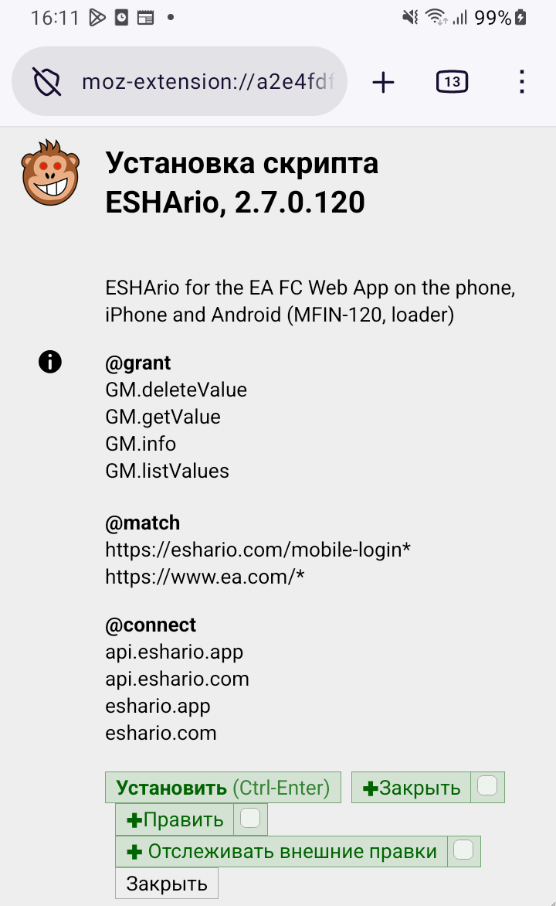
- 4
Откройте вебап
Откройте ea.com/ea-sports-fc/ultimate-team/web-app и войдите в EA, как обычно. В первый раз ESHArio скачивает свой код с нашего сервера и проверяет подпись. Подождите минуту и обновите страницу: ESHArio появится в шапке вебапа.
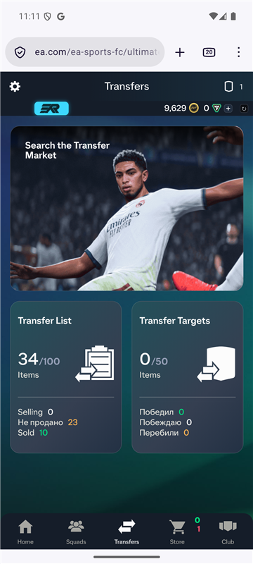
- 5
Войдите в аккаунт ESHArio
Нажмите «войти» на знаке ESHArio в строке монет. Откроется страница входа eshario.com/mobile-login новой вкладкой. Введите почту и пароль от аккаунта ESHArio и вернитесь во вкладку вебапа. Купленный доступ включится сам.
Полезно знать
- Вебап держите в одной вкладке. Во второй вкладке ESHArio покажет строку «занят в другой вкладке» с кнопкой «Перезагрузить». Закроете первую вкладку: вторая заработает сама в течение полуминуты.
- Не нажимайте системную кнопку «Назад» Android в вебапе: Firefox уйдёт со страницы, вебап загрузится заново. Ходите стрелкой вебапа.
- После разблокировки телефона Firefox иногда показывает свои окна: «сделать браузером по умолчанию», «уведомления». Нажмите «Don’t ask again» и «Cancel» или «Not now»: пока окно открыто, нажатия на вебап до него не доходят. Как такое окно выглядит, на кадре справа.
- Пока ESHArio ищет карты на рынке, экран не гаснет сам. Первый запуск поиска может показать «Экран удержан, нажмите ещё»: нажмите ещё раз, так браузер разрешает держать экран.
- Если вы заблокируете телефон или уйдёте в другое приложение, поиск встанет на паузу. Вернитесь и нажмите «Продолжить».
- Замки карт пока на каждом устройстве свои: карта, запертая на компьютере, на телефоне не заперта. Заприте её и здесь.
- ESHArio работает на одном компьютере и одном телефоне за раз. На втором телефоне ценники пропадут, а знак в шапке покажет «Пауза». А сама EA держит вебап открытым только на одном устройстве: вход в вебап на компьютере выкидывает телефон.
- На телефоне с 3 ГБ памяти держите вебап единственной вкладкой Firefox. После нескольких часов работы Firefox может закрыть вкладку. Тогда откройте вебап заново.
- Обновления ESHArio приходят сами: при открытии вебапа ESHArio проверяет наш сервер и ставит новую версию со следующей загрузки страницы.
Не получилось? Напишите в Telegram или на почту support@eshario.com, поможем.
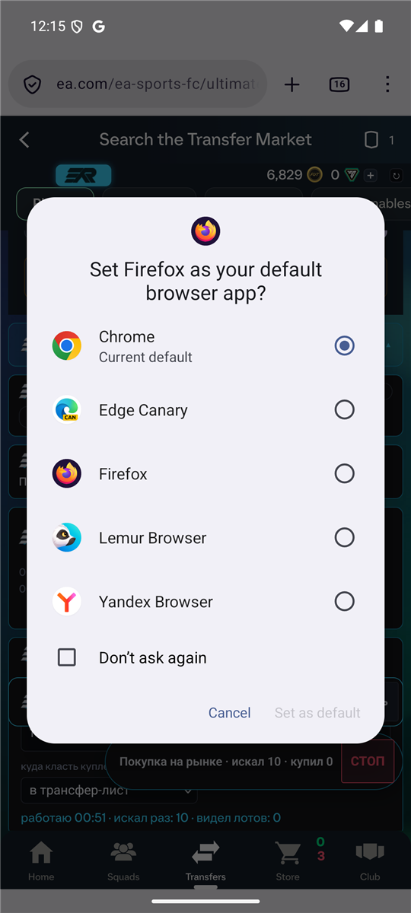